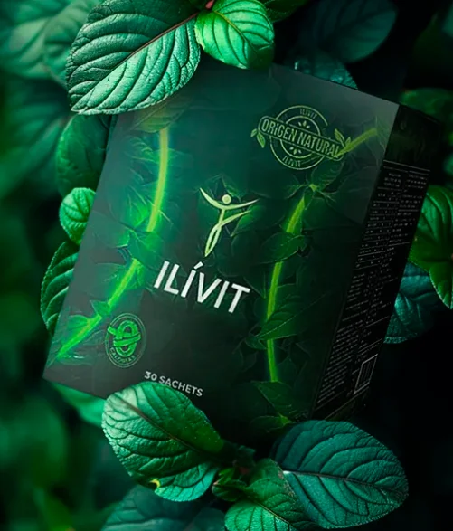

Guía de uso · Depurador natural
Tu guía ILÍVIT
Todo lo que necesitas para tomar tu tisana ILÍVIT: cómo prepararla, cuánto dejarla reposar, qué beneficios aporta, sus ingredientes y las precauciones antes de empezar.

Paso a paso
¿Cómo se prepara? Es muy fácil
Calienta el agua hasta que esté hirviendo
Usa una olla o tetera. El agua debe llegar a su punto de ebullición.
Abre el sobre de ILÍVIT
Rasga el sobre verde y saca la bolsita blanca (la tisana). El sobre no va al agua.
Pon la tisana en una taza y echa el agua hirviendo
Coloca la bolsita en la taza vacía y vierte el agua recién hervida encima.
Mueve la tisana
Haz movimientos suaves tomándola del hilo para que suelte todas sus propiedades.
Déjala reposar
Entre más tiempo de infusión, mayor será el efecto. Si es tu primera vez, empieza con 5 o 10 minutos.
Método olla: también puedes poner la tisana directamente en la olla cuando el agua esté hirviendo y moverla al final para que suelte todo.
Tiempo de infusión
El reposo define la potencia
El tiempo que dejas la tisana en el agua determina la concentración de la bebida: entre más tiempo, mayor dosis y potencia. Ajusta según cómo reacciona tu cuerpo.
Escala de potencia
Temporizador de reposo
Señales
¿Cómo saber si es para ti?
- Sientes que todo lo que comes te cae mal.
- Se te inflama el colon de manera regular.
- Estás hinchado o reteniendo líquidos.
- Se te dificulta entrar al baño.
- Tienes sensación de "no vaciado" después de ir al baño.
Lo que ILÍVIT hace por ti
Beneficios
Un depurador natural a base de plantas que, gracias a su combinación y dosis, ayuda a equilibrar el funcionamiento de tu cuerpo.
- Mayor facilidad y frecuencia al evacuar; regula el tránsito intestinal.
- Ayuda a desinflamar el colon.
- Apoya la depuración del hígado.
- Ayuda a eliminar líquidos retenidos.
- Contribuye a equilibrar tu peso.
- Efecto antioxidante y apoyo a tus defensas.
- Menos toxinas en tu organismo.
Los resultados se acompañan de una alimentación saludable, buena hidratación y actividad física.
Fórmula natural
10 plantas e ingredientes
ILÍVIT combina ingredientes naturales cuyas propiedades han sido estudiadas en investigaciones científicas.
Moringa
Moringa oleiferaAlta en fibra: favorece el tránsito intestinal. Antioxidante y antiinflamatoria.
Cáscara de limón
Citrus limonFlavonoides y vitamina C antioxidantes; su fibra ayuda a reducir la hinchazón.
Hinojo
Foeniculum vulgareCarminativo: reduce gases e hinchazón abdominal y mejora la digestión.
Jengibre
Zingiber officinaleEstimula la motilidad intestinal y ayuda a calmar la inflamación digestiva.
Remolacha
Beta vulgarisBetalaínas antioxidantes y betaína, que apoya la función del hígado.
Alcachofa
Cynara scolymusEstimula la producción de bilis; apoya la salud hepática y digestiva.
Menta
MenthaAntiespasmódica y carminativa: alivia cólicos y molestias digestivas.
Berenjena
Solanum melongenaRica en agua y fibra, baja en calorías; aporta saciedad.
Cidra
Sechium eduleMás de 94 % agua y unas 20 kcal por 100 g; apoyo en planes de control de peso.
Espinaca
Spinacia oleraceaVitaminas K, A, C, hierro y fibra que favorecen un tránsito regular.
Lee antes de empezar
Precauciones
ILÍVIT tiene un efecto estimulante sobre los intestinos y las vías biliares. Si tienes alguna de estas condiciones, consulta primero con tu médico.
No lo tomes sin consultar al médico si tienes
- Diarrea crónica o alteraciones de la flora intestinal
- Deshidratación o presión baja
- Hipersensibilidad a sus componentes
- Obstrucción intestinal o enfermedad diverticular complicada
- Dolor abdominal de causa desconocida o apendicitis
- Inflamación de la vesícula
Embarazo y lactancia
No se recomienda durante el embarazo. En lactancia, la recomendación general es tomarlo después de 1 año, cuando el bebé ya come más sólidos. Antes de ese tiempo, solo con orientación, a menor dosis y no a diario.
Menores de 14 años
No se recomienda: están en pleno crecimiento y desarrollo. Mayores de 14 años, con tiempos de infusión bajos y seguimiento de cómo reaccionan.
Tratamiento con antibióticos
Suspende ILÍVIT mientras tomas antibióticos, porque aumenta el riesgo de diarrea. Puedes reiniciarlo 2 días después de terminar el tratamiento.
Si sufres de gastritis
Sigue en control con gastroenterología y tómalo 30 minutos después de una comida liviana. Si sientes dolor, toma un vaso de agua con media cucharadita de bicarbonato.
Si tienes hemorroides
Al combatir el estreñimiento puede ayudar. Al principio pueden aparecer pequeños sangrados mientras se mueve materia acumulada; se regulan con los días. Acompáñalo con agua y fibra.
Para mejores resultados
Recomendaciones de uso
- Tómalo en la noche y empieza con poco tiempo de reposo (5–10 min) hasta conocer tu efecto.
- Ajusta la potencia subiendo poco a poco el tiempo de infusión, máximo 30 minutos.
- Mantente hidratado y consume fibra: frutas, verduras, papaya o pitaya.
- Haz pausas intermitentes en tu consumo.
- Si tienes muchas deposiciones o diarrea, disminuye el tiempo de infusión.
- Acompáñalo con alimentación saludable y actividad física.
- Sigue las instrucciones del folleto del producto; abusar de la dosis puede afectar tu flora intestinal.
- Si tienes una condición médica o tomas medicamentos, consulta antes con la línea médica.
Dudas comunes
Preguntas frecuentes
Si tengo diabetes, ¿lo puedo consumir?
Sí. ILÍVIT cuenta con registro INVIMA NSA-0011238-2021. Si estás en tratamiento, comenta con tu médico que lo vas a tomar.
¿Daña la flora intestinal?
Tomado según las recomendaciones del folleto, no hay riesgo de deterioro. Su efecto laxante es de origen natural y en dosis bajas, y sus ingredientes aportan fibra que actúa como prebiótico. Si tienes muchas deposiciones, disminuye la dosis y haz pausas.
¿ILÍVIT da diarrea?
Puede pasar si el tiempo de infusión es alto para tu cuerpo. Por eso se recomienda empezar con 5–10 minutos e ir subiendo. Si ocurre, reduce el tiempo de reposo y mantente hidratado.
Sufro de estreñimiento, ¿me sirve?
Sí. Estimula los movimientos intestinales y ayuda a que las heces sean más blandas, lo que facilita la evacuación, junto con el consumo de fibra y agua.
Sufro del colon, ¿me ayuda?
Contribuye a limpiar las paredes intestinales y a agilizar las deposiciones, lo que ayuda a desinflamar el colon y disminuir el exceso de gases. Si tienes un diagnóstico, sigue el control con tu médico.
¿Cuál es el mejor horario?
En la noche. Así el efecto llega en la mañana. Mira el video oficial de horarios en preguntas frecuentes de I'M FIT.
Compártela
Escanea y lleva la guía en tu celular
Apunta la cámara de tu celular al código QR para abrir esta guía. También puedes copiar el enlace y enviarlo por WhatsApp.
Línea de atención
¿Tienes dudas? Escríbenos
Si necesitas saber cómo tomar ILÍVIT o si hay alguna contraindicación con tus medicamentos o condiciones, nuestro equipo te orienta.